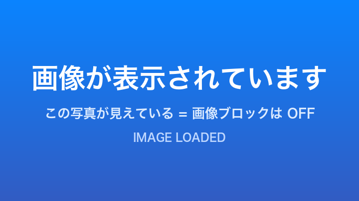

モジブラへようこそ
このページは使い方の説明と、ブロックがちゃんと効いているかをその場で確認できるテストを兼ねています。
A quick guide plus a live test page for each blocking rule.
モジブラは何をするアプリ？
Web ページの画像・動画などの読み込みを最初から遮断して、 通信量（ギガ）を節約するブラウザです。文字は普通に読めるので、 ニュースや調べものはそのまま使えます。
最初は画像・動画/音声・フォント・ポップアップがブロックされ、 スタイルシートと JavaScript は許可されています。 ページが崩れて読めないときは、後述の設定で個別に緩められます。
画面の見かた
操作はすべて画面の下にまとまっています。
- ドメイン名 … タップすると URL 全体が出て編集できます。検索したい言葉をそのまま入れても OK です。
- ↻ … 再読み込み（読み込み中は中止）。ページを下に引っ張っても再読み込みできます。
- ☆ … このページをブックマークに追加／解除。
- ‹ › … 戻る／進む。
- ⌂ … ホーム（検索欄とブックマークの一覧）。
- 1 … タブの一覧。数字は開いているタブの数です。
- ••• … 設定、このサイトの設定、このページで JavaScript を許可して再読込。
ブロックを試してみる
ここから下は実際に読み込みを試すテストです。 ••• → 設定でトグルを切り替えてから、 このページを再読み込みすると結果が変わります。
1. 画像

ブロック中: 破線の四角いプレースホルダになります。
許可中: 「画像が表示されています」と書かれた青い画像が出ます。
2. メディア（動画・音声）
ブロック中: 再生できず、真っ黒のまま／読み込みエラーになります。
許可中: 再生ボタンを押すと「動画が再生されています」と表示されます。
3. フォント
ブロック中: 上下 2 行が同じ見た目になります（端末のフォントで代替）。
許可中: 上の行だけドット絵のようなピクセルフォントになります。
4. スタイルシート
スタイルシートをブロックすると、このページ全体の見た目も簡素になります。 文字は読めますが、レイアウトが崩れるサイトも多いので、常時ブロックはあまりおすすめしません。
5. JavaScript
JavaScript を止めると通信量はかなり減りますが、動かなくなるサイトが多いです。 普段は許可のままにして、必要なときだけ止めるのがおすすめです。 逆に「このページだけ許可したい」ときは ••• → このページで JavaScript を許可して再読込 が使えますPro。
6. ポップアップ
ブロック中: 画面下に「ポップアップをブロックしました」と出て、開きません。
許可中: 新しいタブでページが開きます。
設定の変えかた
- 画面下の ••• をタップ
- 設定を選ぶ
- 「ブロックするリソース」の各トグルを切り替える（変更はすぐ反映されます）
- このページに戻って ↻ で再読み込みし、結果を見る
検索エンジンは Google と Yahoo! JAPAN を切り替えられます。
Pro でできること
- 長押しで画像を表示Pro
ブロックされた画像を長押しすると、その画像だけ読み込みます。 ページを移動すれば元のブロック状態に戻るので、通信量は最小限で済みます。 iOS 標準のリンクプレビューを優先したい場合は、設定で切り替えられます。 - サイトごとの設定Pro
「このサイトだけ画像を許可」のように、ドメイン単位で例外を保存できます。 ••• → このサイトの設定から。 - このページだけ JavaScript を許可Pro
表示が崩れたページを、その場だけ JavaScript ありで読み直せます。 次にページを移動すると自動で元に戻ります。
よくある質問
ページが真っ白／崩れて読めない
スタイルシートか JavaScript のブロックが原因のことが多いです。 ••• → このページで JavaScript を許可して再読込Pro を試すか、設定で該当のトグルを OFF にしてください。
ログインできない
JavaScript のブロックを OFF にしてお試しください。
どれくらい通信量が減るの？
サイトによりますが、画像の多いページでは読み込み量の大半が画像です。 まずは画像だけブロックして使うのが、崩れにくく効果も大きいバランスです。